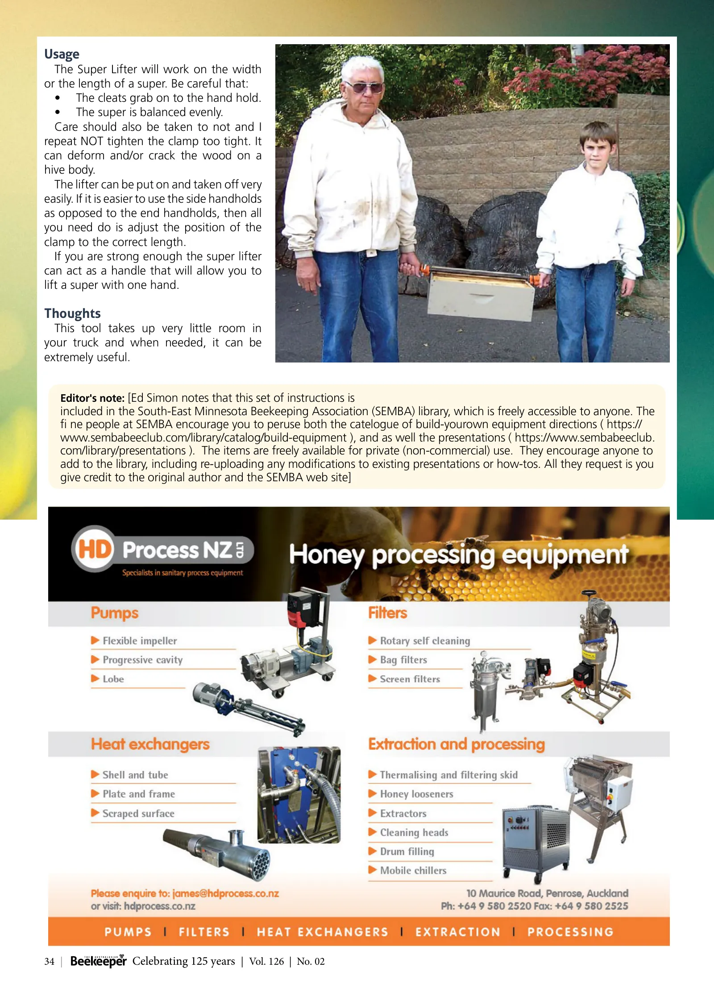

Usage
The Super Lifter will work on the width
or the length of a super. Be careful that:
•
The cleats grab on to the hand hold.
•
The super is balanced evenly.
Care should also be taken to not and I
repeat NOT tighten the clamp too tight. It
can deform and/or crack the wood on a
hive body.
The lifter can be put on and taken off very
easily. If it is easier to use the side handholds
as opposed to the end handholds, then all
you need do is adjust the position of the
clamp to the correct length.
If you are strong enough the super lifter
can act as a handle that will allow you to
lift a super with one hand.
Thoughts
This tool takes up very little room in
your truck and when needed, it can be
extremely useful.
Editor's note: [Ed Simon notes that this set of instructions is
included in the South-East Minnesota Beekeeping Association (SEMBA) library, which is freely accessible to anyone. The
fi ne people at SEMBA encourage you to peruse both the catelogue of build-yourown equipment directions ( https://
www.sembabeeclub.com/library/catalog/build-equipment ), and as well the presentations ( https://www.sembabeeclub.
com/library/presentations ). The items are freely available for private (non-commercial) use. They encourage anyone to
add to the library, including re-uploading any modifications to existing presentations or how-tos. All they request is you
give credit to the original author and the SEMBA web site]
34 |
Celebrating 125 years | Vol. 126 | No. 02